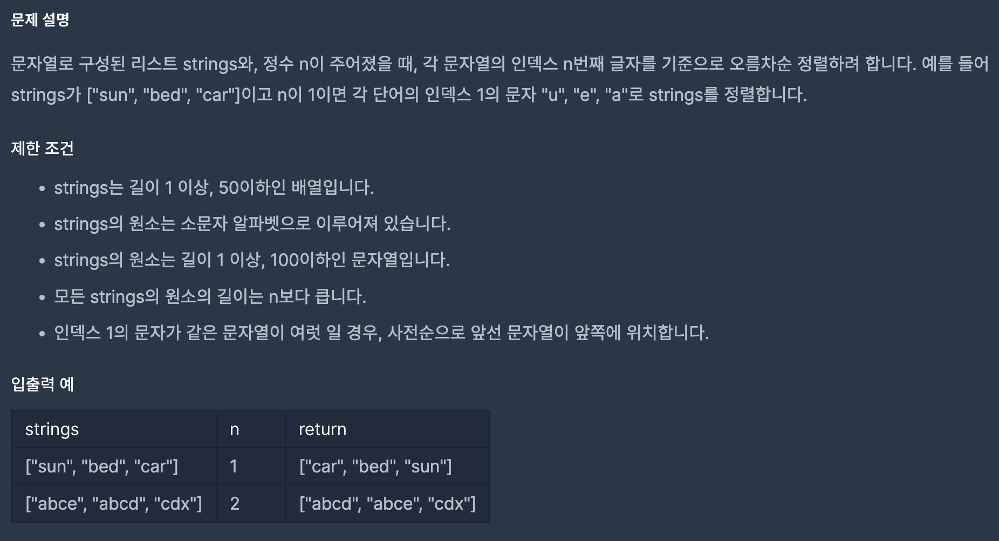
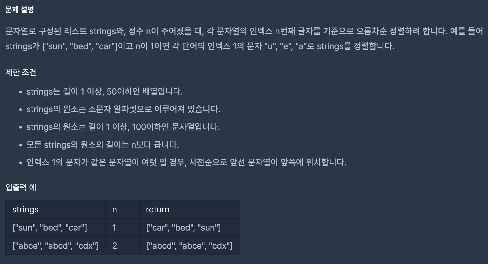

TIL - 오늘의 내가 새롭게 알게 된 것 📝
강의 내용 정리
오늘들은 강의는 객체와 배열, 그리고 반목문에 관련된
것들이였다.
기억하고 싶은 부분들이 있어 기록해놔야겠다.
1. 객체
- 1. 객체는 안의 내용이 똑같다고 해도 용량이 크기에 '주소'로서 저장되어 같은 객체를 비교해도 false로 나온다.
객체안에 문자열만을 비교하고자 한다면 JSON.stringify()를 사용하면 된다.
- 일급객체(First-class Object) : 쉽게 이야기 하자면 함수를 아주 유연하게 사용하도록 하는 것!
콜백함수 : 매개변수로 함수를 받음.
고차함수 : 함수를 인지로 받거나 return하는 함수.
기억하고 싶은 부분들이 있어 기록해놔야겠다.
1. 객체
- 1. 객체는 안의 내용이 똑같다고 해도 용량이 크기에 '주소'로서 저장되어 같은 객체를 비교해도 false로 나온다.
객체안에 문자열만을 비교하고자 한다면 JSON.stringify()를 사용하면 된다.
let person1 = {
name: "홍길동",
age: 30,
gender: "남자",
};
let person2 = {
name: "홍길동",
age: 30,
gender: "남자",
};
console.log(person1 === person2); // false
console.log(JSON.stringify(person1) ===
JSON.stringify(person2)); // true
2. ES6 문법 - 일급객체(First-class Object) : 쉽게 이야기 하자면 함수를 아주 유연하게 사용하도록 하는 것!
콜백함수 : 매개변수로 함수를 받음.
고차함수 : 함수를 인지로 받거나 return하는 함수.
하루 회고
오늘 인강을 들으며 자바스크림트가 얼마나 유연한 언어인지
다시 한번 깨닫게 되었다.
배열안에도 함수가 들어갈수있는 건 오늘 알아서 흥미로웠다.
배열안에도 함수가 들어갈수있는 건 오늘 알아서 흥미로웠다.
문제 해결 과정
1. 1주차 강의를 끝내며 주어진 문제를 푸는데 분명 맞게
풀었는데 계속 이상한 오류가 떴다.
2-3번을 봐도 틀릴 이유를 모르겠었는데, 천천히 다시보니 length를 붙혀야할 곳에 빼먹은 것때문에 계속 들렸던 것이였다 ... ㅠㅠ
꼼꼼하게 작성해나가는 버릇을 들여야겠디.
2. 2주차 과제에서 배열들을 순서대로 정렬하는 것은 어렵지 않게 했는데,
특정 idx를 기반으로만 정렬하고 같은 문자열이라면 순서를 그대로 유지하는 것이 매우 어려웠다.
 이 문제인데, 처음 내가 푼 방식은 문자의 해당 인덱스의 문자가 같을때 문자를 그대로 배치해야한다는 것을 까먹어서 모든 테스트 케이스를 만족시키지 못했다.
제공된 힌트는 해당 인덱스의 해당하는 문자를 아이템 맨앞에 붙힌뒤 정렬을 하고 그 이후에 맨 앞글자를 삭제하라는 것이였다.
힌트에서도 좋은 방법은 아니지만 현재까지의 강의를 들은 우리에게 가장 쉬운 방법이라고 하니, 일단 힌트에서 제시한대로 문제를 푼 후 나중에 다시 풀어봐야겠다라는 생각이 들었다.
문자열에 n번째 단어를 붙혀 반환한 후 정렬을 하고,
문자열을 나눈후 0번째 인덱스를 빼고 다시 합쳐 반환하는 형식으로 풀었다.
내가 설명하면서도 좋은 풀이는 아닌거 같다. ㅜㅜ
완강한 후 다시 풀어봐야겠다.
2-3번을 봐도 틀릴 이유를 모르겠었는데, 천천히 다시보니 length를 붙혀야할 곳에 빼먹은 것때문에 계속 들렸던 것이였다 ... ㅠㅠ
꼼꼼하게 작성해나가는 버릇을 들여야겠디.
2. 2주차 과제에서 배열들을 순서대로 정렬하는 것은 어렵지 않게 했는데,
특정 idx를 기반으로만 정렬하고 같은 문자열이라면 순서를 그대로 유지하는 것이 매우 어려웠다.
 이 문제인데, 처음 내가 푼 방식은 문자의 해당 인덱스의 문자가 같을때 문자를 그대로 배치해야한다는 것을 까먹어서 모든 테스트 케이스를 만족시키지 못했다.
function solution(strings, n) {
// strings배열의 단어의 n번째 글자로 재정렬.
let newArr = strings.sort((a, b) => a[n] < b[n] ? -1 :
(a[n] > b[n]) ? 1 : 0)
return newArr
}
ㅜㅜ 힌트를 보지않고 해결해보고 싶었는데 시간이 흘러도
해결방안이 잘 생각나지 않아 결국 힌트를 보게 되었다.
제공된 힌트는 해당 인덱스의 해당하는 문자를 아이템 맨앞에 붙힌뒤 정렬을 하고 그 이후에 맨 앞글자를 삭제하라는 것이였다.
힌트에서도 좋은 방법은 아니지만 현재까지의 강의를 들은 우리에게 가장 쉬운 방법이라고 하니, 일단 힌트에서 제시한대로 문제를 푼 후 나중에 다시 풀어봐야겠다라는 생각이 들었다.
function solution(strings, n) {
for (let i = 0; i < strings.length; i++) {
strings[i] = strings[i][n] + strings[i]
}
strings.sort();
for (let i = 0; i < strings.length; i++) {
strings[i] = strings[i].split('').slice(1).join('')
}
return strings
}
내가 제출하게 된 코드다. 문자열에 n번째 단어를 붙혀 반환한 후 정렬을 하고,
문자열을 나눈후 0번째 인덱스를 빼고 다시 합쳐 반환하는 형식으로 풀었다.
내가 설명하면서도 좋은 풀이는 아닌거 같다. ㅜㅜ
완강한 후 다시 풀어봐야겠다.
강의 내용 정리
아직 강의 초반이라 익숙한 것들이 많이 나온다.
삼항 연산자는 사용하였었는데 비슷한 느낌의 조건부 실행은 조금 생소했다.
강의해서 요즘 많이 사용한다고 하셨는데,
조건부 실행에 대해서는 다시 한번 짚고 가면 좋을 것 같다.
1. 조건부 실행
삼항 연산자는 사용하였었는데 비슷한 느낌의 조건부 실행은 조금 생소했다.
강의해서 요즘 많이 사용한다고 하셨는데,
조건부 실행에 대해서는 다시 한번 짚고 가면 좋을 것 같다.
1. 조건부 실행
1. and조건(&&)
let x = 10;
x > 0 && consolo.log("양수입니다.") // 양수입니다. 출력
2. or조건(||)
let y;
let z = y || 20; // y는 undefined로 flasy한 값이니 20이
출력된다.
2. entries : 2차원 배열로 반환해준다
let person = {
name: "홍길동",
age: 30,
gender: "남자",
};
let entries = Object.entries(person);
console.log("entries => ", entries); // entries => [ [
'name', '홍길동' ], [ 'age', 30 ], [ 'gender', '남자' ]
]
하루 회고
JS 문법 강의를 듣는 첫번째 날이다.
갈수록 어려워지겠지?
기초부터 다시 단단히 잡으며 공부를 해야겠다.
갈수록 어려워지겠지?
기초부터 다시 단단히 잡으며 공부를 해야겠다.
개발 단계 정리 OR 오늘 배운 것
1. 공통으로 작업해할 것 잡아놓기 (깃헙 커밋, 클래스명 등)
2. 분리될 수 있는 것들 잘 분리해놓기. 기능에 따라 파일 분리. 코드 분리!
2. 분리될 수 있는 것들 잘 분리해놓기. 기능에 따라 파일 분리. 코드 분리!
하루 회고
오늘은 첫번째 팀 프로젝트가 끝나는 날이다.
첫 프로젝트는 html, css가 바탕이 되었던 프로젝트 같아, 기술적으로 어려움이 있었다기보단,
협업을 잘 할수 있는 방법에 대해 생각해볼수 있던 프로젝트였다.
많이 부족했지만 함께 따라와준 팀원들에게 고마웠고, 깃헙 룰에 대하여 좀 더 공부해봐야할 것 같다.
첫 프로젝트는 html, css가 바탕이 되었던 프로젝트 같아, 기술적으로 어려움이 있었다기보단,
협업을 잘 할수 있는 방법에 대해 생각해볼수 있던 프로젝트였다.
많이 부족했지만 함께 따라와준 팀원들에게 고마웠고, 깃헙 룰에 대하여 좀 더 공부해봐야할 것 같다.
강의 내용 정리
git : 코드 변경 기록 (버전관리도구 / 형상솬리도구 /
소프트웨어의 변경사항을 체계적으로 추적하고 통제)
git hub : 온라인 코드 저장소 (온라인 백업, 공유, 협업)
git hub : 온라인 코드 저장소 (온라인 백업, 공유, 협업)
- pwd : 현재 작업환경 확인
- ls-a : 숨겨진 파일 설정들도 확인
- cd 폴더명 : 폴더 이동
- mkdir 폴더명 : 폴더 생성
- touch 파일명 : 파일 생성
😈 - git 특강
개발 단계 정리
1. 팀 이름 만들기 - 코딩쉽지않조
2. 기본 셋팅 맞추기 (prettier, esLint 등) 3. 피그마로 와이어 프레임 잡아오지
2. 기본 셋팅 맞추기 (prettier, esLint 등) 3. 피그마로 와이어 프레임 잡아오지
하루 회고
git init
git add .
git commit -m "커밋 메세지"
git push
git push (다른 사람 코드 가져오기)
협업을 잘하려면 github에 익숙해져야겠다.